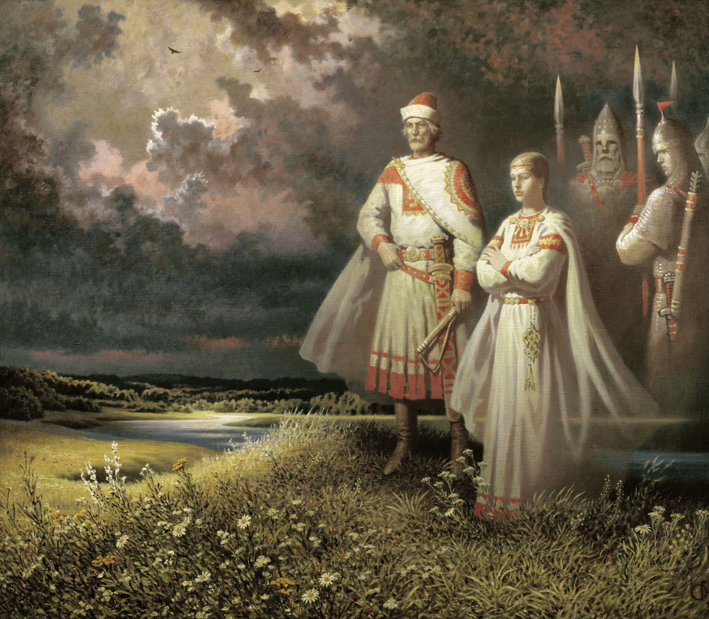

Падение Арконы.
К делу церкви сердцем рьяный,
Папа шлёт в Роскильду слово:
«Встаньте! Вас теснят не в меру
Те язычники лихие,
Подымайте стяг за веру,-
Отпускаю вам грехи я».
Алексей Константинович Толстой. «Боривой». 1870г.
Когда-то, давным-давно, земли русов и славян простирались далеко на запад, а их ладьи бороздили суровые северные моря, наводя ужас на соседей. Но шли века, некоторые славянские племена забывали о родстве. Одни принимали новую веру, другие кланялись новым царям. И сегодня на бывших славянских землях и следа не осталось, да живут другие народы. Родная летопись чужими руками предалась уничтожению, а затем и забвению, а деяния их жестоко сказались на дальнейший ход событий: вот уже который век у нас бытует ущербная теория, согласно которой русская государственность началась всего тысячу лет назад, причём с призвания в качестве правителей германцев…
Положение Руяна становилось всё более и более опасным. Церковь организовывала один поход за другим, и постепенно независимые русо-славянские земли падали под ударами крестоносцев. Вскоре Руян остался единственной русо-славянской страной, где можно было свободно жить и хранить светлую веру родных Богов и Предков. В намерениях крестоносцев покорить его не оставалось сомнений. Аркона продолжала успешно отражать периодические нападения датчан и нападать в ответ, но расклад сил менялся не в её пользу. Её окружали враждебные государства, в которых господствовала враждебная идеология.
Из некоторых исторических летописных материалов, известно как произошло падение Арконы и не сложно догадаться по какой причине…
Печально, но о городе Арконе и о героическом сражении русо-славянского сопротивления захватчикам мало кто из русских потомков ведает правду... Героическая оборона Арконы – это родная русская летопись, о которой должен ведать и помнить каждый русич!
В 1136 году был организован масштабный крестовый поход против славян. У руян не хватило сил, чтобы отразить такую угрозу. Крестоносцы разорили остров и осадили Аркону. Завоеватели отрезали доступ защитников к питьевой воде, и волхвы, чтобы спасти город, притворно согласились принять христианство. Они приняли крещение, после чего крестоносцы ушли, оставив в городе священника для надзора за установлением «истинной веры». Но, как только угроза миновала, руяне изгнали его и его людей из города. После этого руяне сумели ещё провести несколько успешных войн с германцами и даже спасли славянского князя бодричей Никлота от устроенного против него крестового похода. Но долго противостоять столь многочисленному противнику они не могли…
В 1168 году епископ Абсалон собрал очередной крестовый поход против славных варягов (балтийских славян), остававшихся «язычниками». Предводителем его стал датский король Вальдемар I. К датчанам присоединились войска саксонского герцога Генриха Льва. В объединенной армии, помимо датчан и саксов, были шведы, бургундцы, фламандцы, швейцарцы. По масштабности этот поход превосходил все предыдущие, собралось войско почти со всей западной Европы. В мае крестоносцы высадились на Руяне и подступили к Арконе. Они подготовил внезапное нападение с западнославянскими, поморянскими князьями Казимиром и Болеславом на славный город Аркону.
Монах Саксон Грамматик, сопровождающий армию Вальдемара, присутствовал при этом и старательно записывал всё происходящее. Также и по описаниям Гельмольда можно составить ход событий.
30-тысячное войско осадило Аркону. Осаждённые руяне яростно сопротивлялись и были уверенны в своих силах и не собирались сдаваться. Они украсили стены стягами с изображёнными на них орлами, на башню над воротами вынесли главное знамя - Станицу. Более 2 месяцев продолжалась битва за Аркону, имевшую лишь небольшой гарнизон. Все они героически погибли, защищая Аркону - никто не сдался, а у врагов были громадные потери.
Почти полтора месяца была война во владениях ругов на берегу балтийского моря и только потом когда остатки войск отошли к острову - датский король с немецкими отрядами начали штурм города Аркона. Всего, к моменту штурма (на момент высадки различные хроники указывают 30 с не большим тысяч!) насчитывалось до 20 000 вражеских воинов. Именно отлично подготовленных воинов - убийц, а не крестьян - набранных в деревнях. Основное войско Арконы около 2500 человек погибло в первый же день, отражая высадку. Потом целую неделю датчане и немцы штурмовали городские стены, где стояли простые люди. Они героически сражались, враги же, когда не смогли взять город штурмом - подожгли его сразу со всех сторон. Люди кидались в огонь и предпочитали смерть плену и крещению.
Штурм крепости начался с моря – откуда его меньше всего ожидали. Бесшумно подошли к высоким скалам ладьи данов и их союзников поморян. Не сразу им удалось попасть стрелой с привязанной к ней тонкой веревкой в скальную расщелину.
Нападавшим по верёвке удалось подняться, вбить крючья и преодолеть ещё несколько метров природной крепостной стены, спустить канаты, для идущих следом. Всё выше карабкались враги, всё больше их было на скале. Если кто-то срывался, то падал в пучину моря молча – нельзя было выдать себя ни звуком, ни вскриком.
Одновременно с южной стороны, перебежками от кустов к рощицам, продвигалась другая часть войска. И здесь проводниками были славяне, поднаторевшие в хитростях разведки и многое перенявшие у своих соседей и учителей – русов-руян, лютечей-велетов и ободритов-бодричей. Только зависть к баснословным богатствам Арконы могла толкнуть на подобное неслыханное предательство и злодеяние.
Король напал на Ругию с огромным количеством воинов и осадил город Аркону, залив предместье реками крови. Город взять было нелегко: высота стен с валом достигала 27 метров и камнеметные машины не могли их преодолеть. Оставалась надежда на длительную осаду и на то, что у защитников не хватит питьевой воды. Осажденные, уверенные в своих силах, покрыли стены и башни знаменами и гербами...
Атака града Арконы началась практически одновременно со всех сторон. Гвардейцы, обнаружив, что окружены, стали кругом у храма, выставили вперёд копья. Но как устоять под градом стрел, сыпавшихся со всех сторон?! Каждый защитник был утыкан множеством вражеских стрел, прежде чем враги решились подойти вплотную и биться на мечах. Все воины Световита пали в этой не равной битве, ни один не попросил пощады, не попытался бежать. Кровь не была видна на их алых рубахах, и никто не ведал, сколько ран они получили, перед тем как испустить дух. Но, умирая, каждый из них знал, что становится истинным «мужем крови», которого ждёт в своей небесной обители Перун.
… 12 июня 1168 года во время очередного приступа была подожжена башня и ворота, малое количество воды не позволило погасить пожар. Аркона была обречена. Жители, видя свою обреченность, бросались в пламя, не желая быть рабами. Король приказал вынести кресло и сел в него, чтобы наблюдать за происходящим. Город пал.
Все это время бок о бок сражалась с войском и народом, и отборная дружина храма - ко времени падения города их осталось 200 с небольшим русо-славянских белых войнов-витязей. И вот когда город был взят, остался только храм Бога Свентовита.
Почти ещё две недели эти 200 с не большим числом воинов обороняли храм от 15 000 войска (столько осталось от 30 000 вражеского войска: около 10 000 погибло на побережье и 5 000 при штурме города). Храм Свентовита был укреплен и расположен на вершине утеса. Вели к нему две дороги, на которых и стояли русские воины. За две недели боев (в немецких летописях пишут якобы 6-7 дней, и свои потери сильно занижают) славянские воины, которых оставалось к тому моменту лишь 9! человек - вывели из строя 4 500 профессинальных воинов, как спартанцы, настоящих крепких отборных воинов. Трупами заполнился весь ров перед храмом, мечи брались у убитых товарищей. Германцы и датчане уже просто боялись идти на очередной штурм, погибли 2 брата короля, 7 баронов, мечами разрубались всадники вместе с лошадьми.
Так сражались оставшиеся лучшие из лучших - воины русичей и славян. В последний день отряд за отрядом шли на штурм немецкие и датские отряды, впервые применив метод смены, ночью бились датчане - днем немцы. Обессилевшие и не спавшие несколько ночей воины Арконы не сдавались и за последний день немцы не смогли никого убить из 9 витязей (один из них был верховный жрец).
Тогда датчане собрали все бочонки со смолой и с катапульт-кораблей закидали храм, и так подожгли его. Горящие и обожженные бойцы выбежали из храма и кинулись в самую гущу вражеских войск - в свой последний бой - убивая всех на своём пути, пока не погибли.
Пали в сражении все волхвы Арконы. И все паломники, бывшие в это время в святом граде. Только после этого чудовищного побоища на священную землю Арконы, усеянную труппами, ступила нога епископа Абсалома «агнца Христова»!
Взятие Арконы дорого обошлась крестоносцам, потери были огромны. Осаждённые руяне дрались до последнего. Самым трудным препятствием для захватчиков оказались триста витязей на белых конях из арконского храма. В бою с ними погибло несколько тысяч воинов, пали сотни рыцарей – цвет европейской знати.
Так героически погиб последний Ведический Русский Оплот - Аркона. Официальная дата падения по иудохристианским хроникам - 15 июня 1168 года н.э., но это ложь - последние две недели боёв были вычеркнуты из многих (но не всех) летописей, христиане не хотели, что бы у людей осталась какая либо память об отважно погибших русо-славянских воинах-героях. На самом деле падение произошло 1 июля 1168 года н.э. Именно тогда и сгорел храм с последними героическими защитниками. По преданию - возрождение нации Русов начнется, когда на Аркону вновь вернут поруганный куммир Свентовита.
После падения Арконы начался невиданный и крупнейший на Земле геноцид (а не липовый еврейский Холокост) - за 50 лет из 8 миллионов прибалтийских славян остались живыми менее 500 тысяч. Но об этом в Европе ни строчки - это табу. Вся бывшая ГДР - это все русо-славянские земли. Восточные и Западные (Балтийские) славяне это родственные группы, они намного ближе к нам, чем южные славяне или поляки или чехи. Никаких различий между нами - русичами и ними не было. Это была огромная Ведическая Русо-Славянская Цивилизация, не покорившая иудохристианскому кресту и героически погибшая. Падение Арконы - незаживающая народная рана…
Остров Руян превратился в Рюген, германское рыцарство завладело русо-славянской землёй. Германцы присвоили себе не только территорию, но и многие атрибуты знаменитого на всю Европу города. Так, в немецкую геральдику прочно вошёл одноглавый арконский орёл. В русской же истории Аркона если и упоминается, то вскользь и неохотно. Почему? Почему все знают про подвиг трёхсот спартанцев, но почти никто - о трёхстах защитниках Арконы? Почему сегодня все русские знают о Христе, но почти ничего – о тех, кто умирал, не покорившись ему? Заменить свою историю чужой – значит заменить свой родной Дух чужим. У Русичей есть свои настоящие герои: это и славные и отважные белые витязи Арконы, и русо-славянская дружина князя Святослава Хороброго, и многие другие. Они погибали, что сохранить родовой порядок, какой заповедовали Родные Предки и Боги! Это горькие уроки родной летописи, которые нужно помнить и чтить.
Известно со строк летописей, что князь бодричей Крутой, узнав о разграблении Арконы, пришёл в ярость и нанёс ответный удар – предпринял поход в Данию, практически захватил её и сторицей отплатил за нанесённые обиды. Вальдемар Великий в страхе запросил вновь о помощи у немцев – у герцога Саксонии и Баварии Генриха Льва. Те согласились помочь, но пришлось отдать половину сокровищ Арконы за помощь.
Польские летописи Ругию упоминают мельком и невнятно, о князе Крутом – ни слова, но датчане и немцы изобразили Крутого – «дикарем и варваром». Но это уже другая история летописи…
Так пала Аркона на Рюгене - великий русский центр всего славяно-русского мира, где русы были светлыми и справедливыми правителями этого мира…

Светлая память павшим воинам-защитникам великой Кап Арконы!
Слава нашим Предкам – Русичам!
СЛАВА РОДУ!
УРА!
Подготовила Е.Г. Панькова
Использованные материалы:
1. Калашников В.И. Атлас тайн и загадок. Русь легендарная. – М.: Белый город, 2007г.-240с. с илл.
2. Картины русского художника Б. Ольшанского.
3. Материал и художественные изображения из ресурсов Интернета.